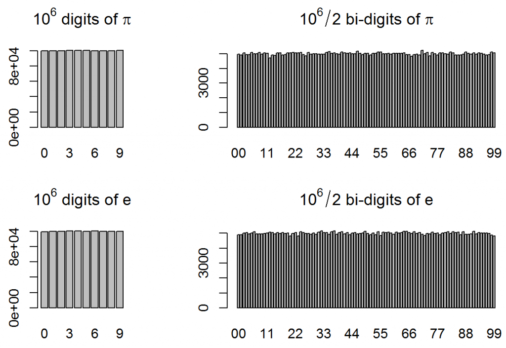
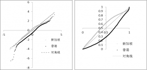
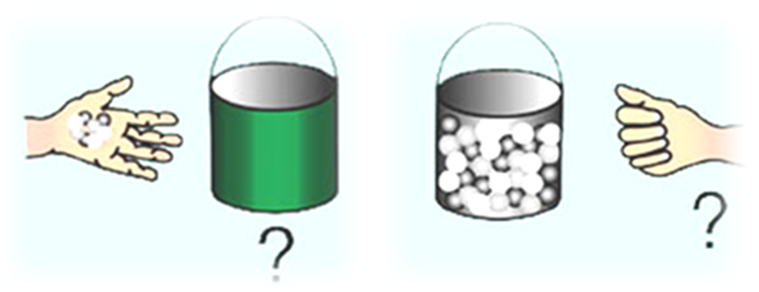
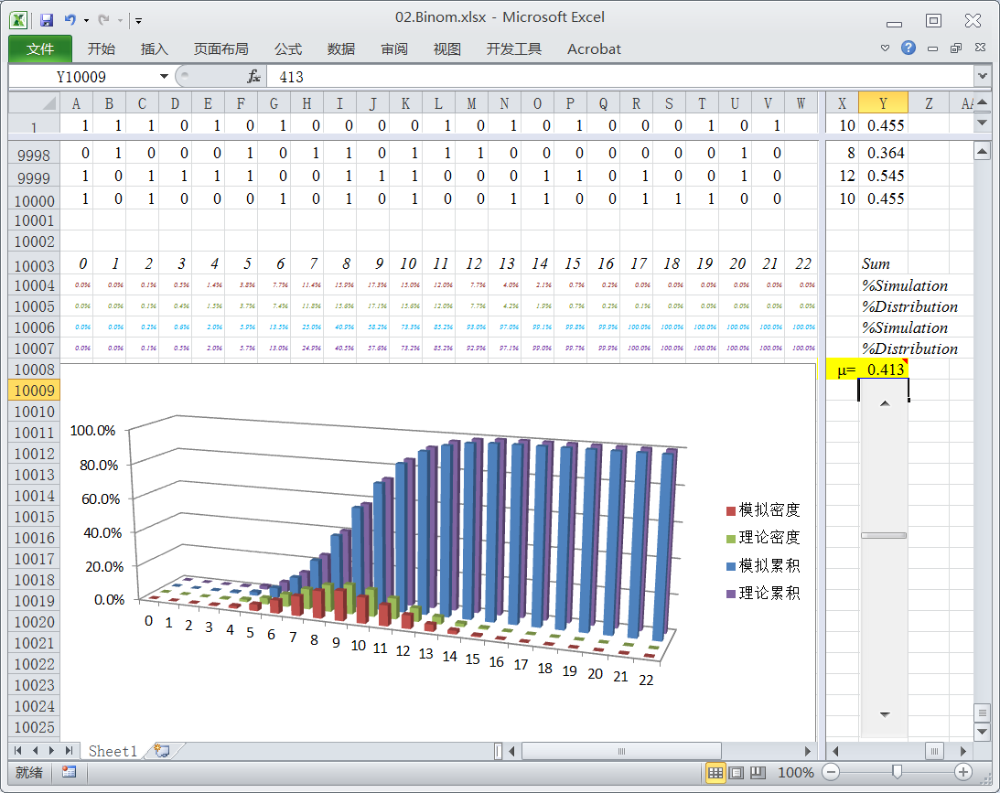
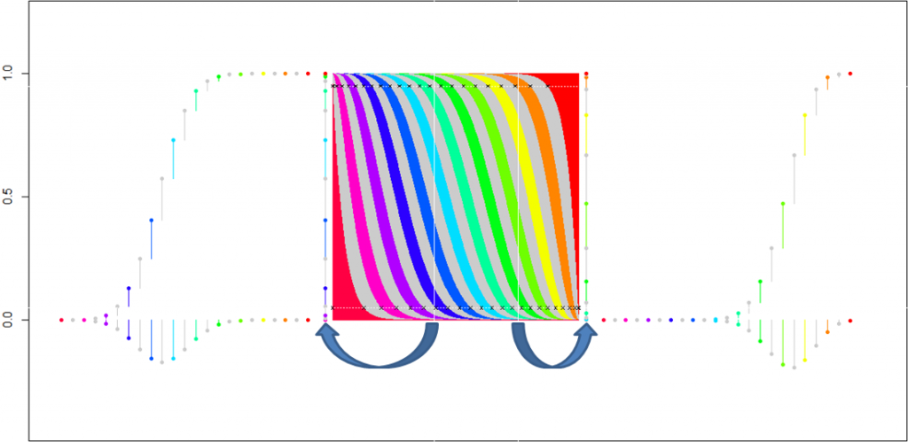
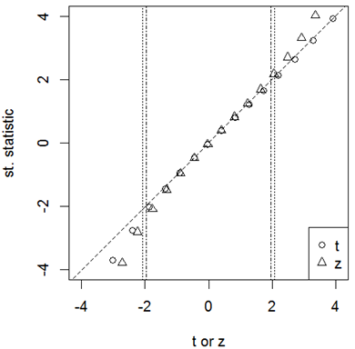
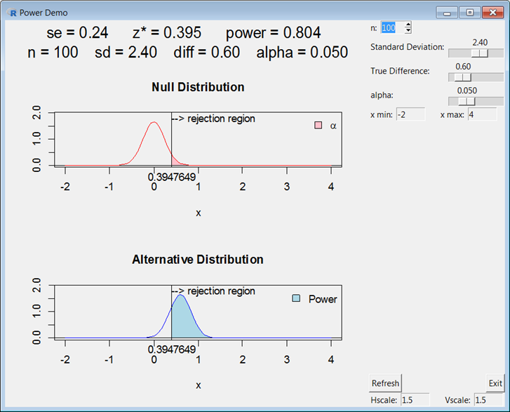
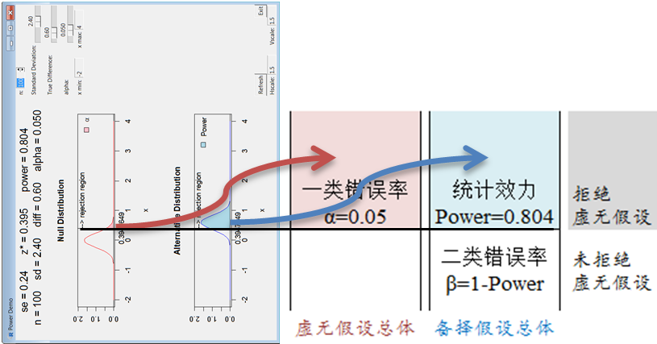

## install.packages("RcmdrPlugin.TeachingDemos",dependencies = T)
require("RcmdrPlugin.TeachingDemos")
power.examp(n = 100,stdev = 2.4,diff = 0.6)
powerExample() # interactive demo## with Yates' correction
(pt_cr <- prop.test(x = c(232,35350), n = c(232+22200, 35350+3130000)))
chisq.test(rbind(c(232,35350),c(22200,3130000)))
## without Yates' correction
(pt_uncr <- prop.test(x = c(232,35350), n = c(232+22200, 35350+3130000),correct=F))
(tt <- t.test(x=c(rep(1,232),rep(0,22200)), y=c(rep(1,35350),rep(0,3130000))))
pt_uncr$conf.int %*% c(-1,1)/2/qnorm(1-0.05/2) ## SE = CIr/2/z_0.025
## minus corrections
(pt_cr$conf.int %*% c(-1,1)/2-0.5/(232+22200)-0.5/(35350+3130000))/qnorm(1-0.05/2)
tt$estimate %*% c(1,-1) / tt$statistic ## SE = estimate/t, replacing "n" with "n-1"